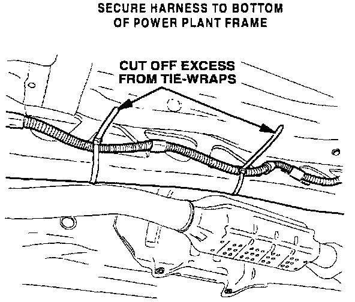
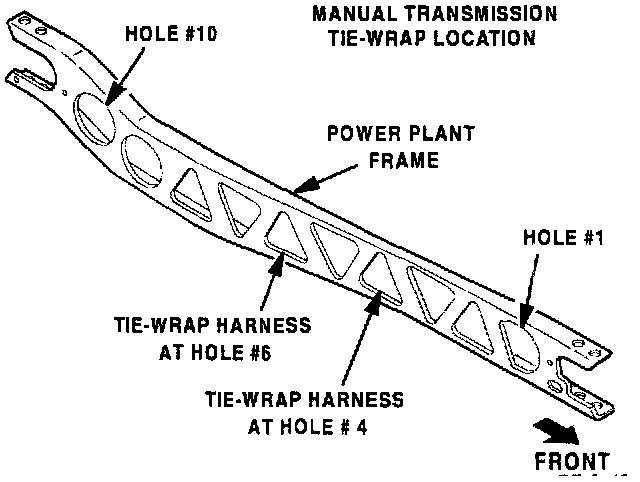
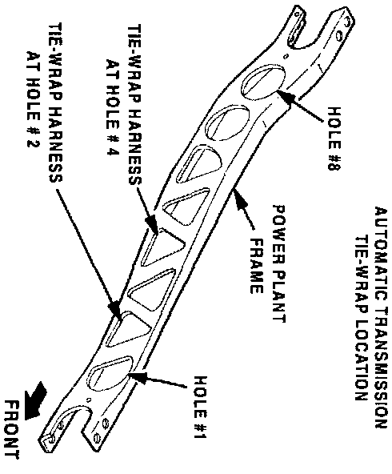
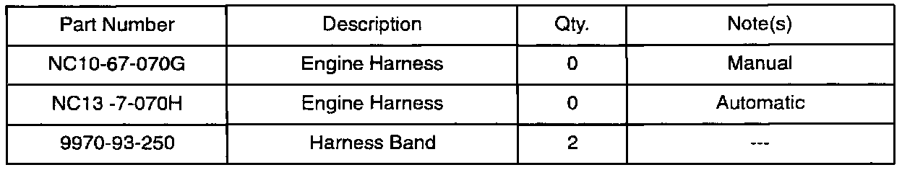

Engine Harness Clips - Rattling Noise At 3,000 Rpm
Bulletin No. 011/98Issued 08/05/98
Revised
Category
T (03)
Applicable Model/s
1999 Miata
Subject
RATTLING NOISE AT 3,000 RPM
APPLICABLE MODEL(S)/VINS
Vehicles with VINs lower than JM1 NB353* X0 116870.
DESCRIPTION
A rattling noise is heard coming from underneath the vehicle at 3,000 RPM and is most noticeable in 1st and 2nd gears. This may be a result of the engine harness clips vibrating against the power plant frame. Harness bands (tie-wraps) are available to prevent the clips from vibrating against the frame.
Customers complaining of this concern should have their vehicle repaired using the following procedure.
REPAIR PROCEDURE
1. Verify customer complaint.
2. Lift vehicle on hoist.

3. Attach tie-wraps into frame holes and secure engine harness as shown. Cut off excess tie-wrap.
Note
^ Tie-wrap locations are different between manual and automatic transmissions.
Manual Transmission

^ Secure harness with tie-wraps at holes # 4 and # 6 as shown.
Automatic Transmission

^ Place tie-wraps and secure harness at holes # 2 and # 4.
4. Verify repair.

PART(S) INFORMATION
WARRANTY INFORMATION
Note
^ This information applies to verified customer complaints on vehicles covered under normal warranty. Refer to the SRT microfiche for warranty term information.
Warranty Type A
Symptom Code 82
Damage Code 98
Part Number Main Cause NC10-67-070F or NC13-67-070F
Quantity of Causal Part 0
Related Part Number 9970-93-250
Quantity of Related Part 2
Operation Number / Labor Hours X025XRX / 0.2 hr.